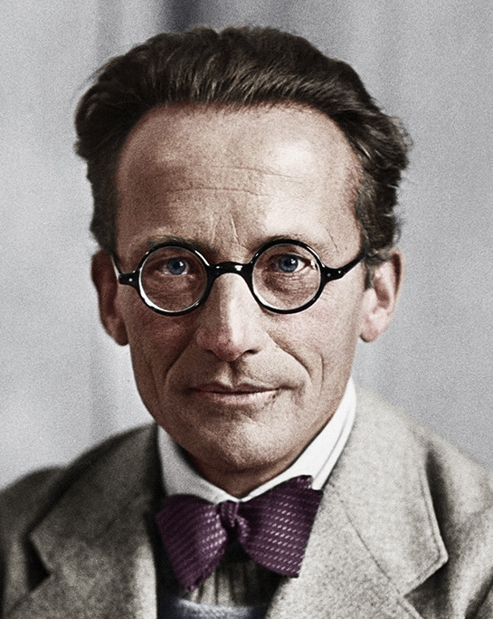

Erwin Schrödinger

A colorized picture of Schrödinger
Erwin Rudolf Josef Alexander Schrödinger (12 August 1887 – 4 January 1961), was a Nobel Prize-winning Austrian physicist who developed a number of fundamental results in the field of quantum theory, which formed the basis of wave mechanics: he formulated the wave equation (stationary and time-dependent Schrödinger equation) and revealed the identity of his development of the formalism and matrix mechanics. Schrödinger proposed an original interpretation of the physical meaning of the wave function.